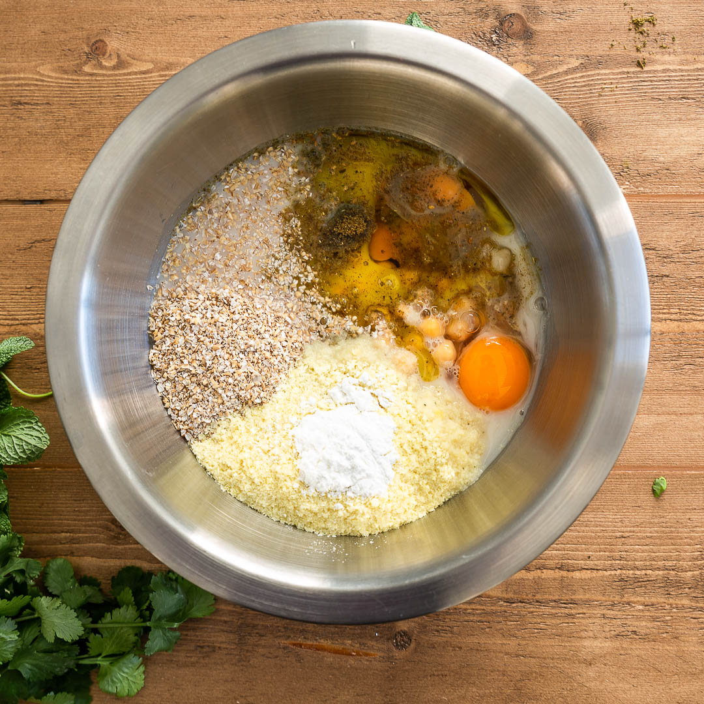
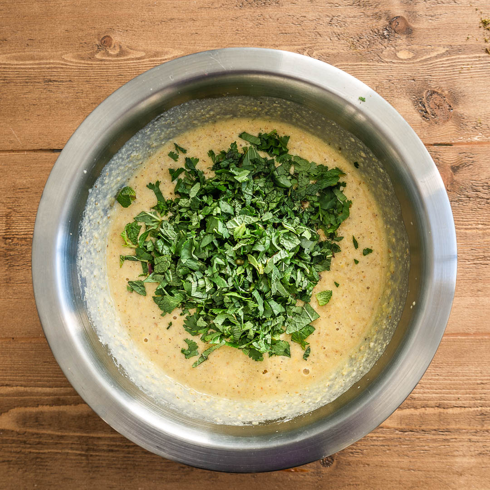

Galettes de pois chiches

Hellooo les gourmands!!! ♥ Nouvelle année, nouvelle recette et pour cette première recette je vous propose de découvrir mes galettes de pois chiches!
Cela fait deux semaines que mon blog ne fonctionne pas ou du moins difficilement et publier une recette est devenu long et beaucoup plus compliqué qu’avant du à des installations récentes que j’ai mis en place sur mon ordinateur (mais il y a toujours une solution pour tout et j’espère qu’on la trouvera rapidement!)
Pour en revenir à cette première recette de l’année, il s’agit d’une recette très très simple à réaliser et plutôt rapide (la cuisson est ce qu’il y a de plus long). Des galettes de pois chiches (un peu comme des pancakes salés), épicées avec du cumin et du zaatar mais libre à vous de modifier les épices. En plus des épices j’y ajoute de la coriandre et de la menthe en quantité égale mais là encore vous pouvez décider de ne pas en mettre ou de varier avec du persil, de l’aneth, du basilic etc..
Cette recette on la réalise n’importe quel soir de la semaine, pour se faire plaisir ou pour dépanner les soirs de flemme et c’est parfait!
Source : La cuisine de Bernard
Ingrédients
- Pois chiches - 265g (poids net egoutté d'une boite de conserve de pois chiches)
- Oeufs - 2
- Son d'avoine - 50g
- Farine de pois chiche - 50g
- Flocons sachet de purée - 50g
- Levure chimique - 1 càc
- Huile d'olive - 25g
- Lait (de riz pour moi) - 290g
- Cumin - 1 càc
- Zaatar - 2 càc
- Sel, poivre
- Bouquet de menthe et de coriandre
Instructions
- Égouttez les pois chiches, ciselez les herbes et préparez vos ingrédients
- Dans un saladier, versez les pois chiches, la farine, le son d'avoine, la poudre pour purée, la levure chimique, le lait, l'huile d'olive et les œufs
- Mixez le tout à l'aide d'un mixeur plongeant
- Ajoutez les épices et les herbes ciselées et mixez à nouveau
- Goutez, salez poivrer si nécessaire ou ajoutez + ou - d'épices selon vos goûts
- Cuire dans une poêle antiadhésive ou ajoutez un peu d'huile de tournesol sur la poêle pour éviter que les galettes accrochent pendant la cuisson
- Aidez vous d'une cuiller pour étaler la pâte parfaitement (en forme de rond) . Comme elle est épaisse la pâte ne va pas s'étaler toute seule sans votre aide
- Comme pour des pancakes, quand les rebords commencent à cuire et que le dessus parait moins liquide, retournez la galette et cuire l'autre côté
- Servir chaud avec une petite salade (moi j'avais fait une salade marocaine ce soir là c'était délicieux!)


Les tips de la communauté
Galettes appréciées pour leur goût et saveur tahina. Les lecteurs sont enthousiaste pour tester la recette, et ceux qui l'ont testée l'approuvent, notamment avec de la confiture d'abricots.
Astuces
- Servir avec de la confiture d'abricots pour un mariage de saveurs
Variantes suggérées
- Servir en accompagnement d'autres sauces ou condiments
Ajustements signalés
- Les flocons de purée sont essentiels pour la consistance moelleuse ; sans eux, elles seront moins moelleuses